功能说明：商户根据商品特性，决定是否启用序列号功能；序列号就是根据商品特性，将序列号与商品进行唯一绑定，根据序列号可以验证“产品的合法身份”，它是用来保障用户的正版权益，享受合法服务的；一套正版的产品只对应一组产品序列号，也叫机器码、认证码、注册申请码；
操作路径：系统设置–序列号设置
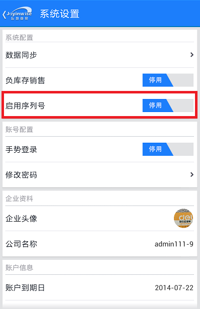
操作说明：
1. 启用序列号默认为“停用”状态，点击后可切换为“启用”状态；
2. 帐户未开帐状态下，新增商品时可以直接添加序列号；如果帐户已开帐，可根据期初库存数量来管理序列号的数量；
商品列表
（一）期初状态
启用商品序列号支持后，新增和编辑商品页面增加了序列号设置字段，包括：停用、必填、选填；
l 停用：商品的不维护序列号；
l 必填：商品的库存数量与序列号个数直接关联，商品数量不允许编辑，直接由序列号个数统计显示；
l 选填：商品的序列号可填可不填，商品数量允许编辑，商品数量必须大于等于序列号的个数；
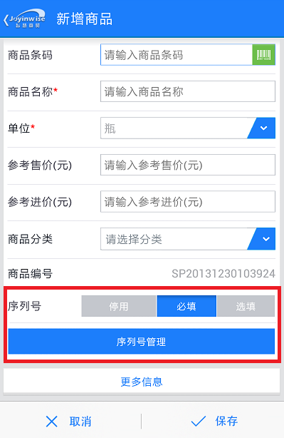
选择必填和选填时，出现序列号管理按钮，点开序列号管理页面包括手动新增和批量新增；点击“下一个”按钮，切换待维护序列号的仓库名称。
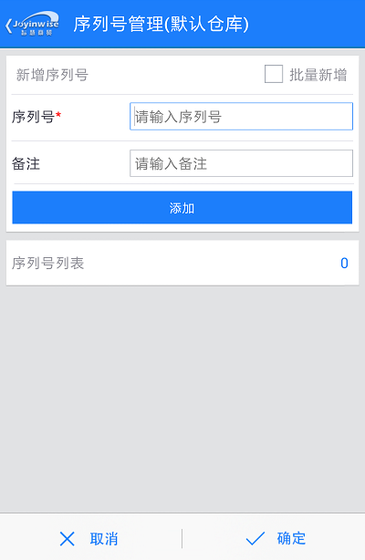 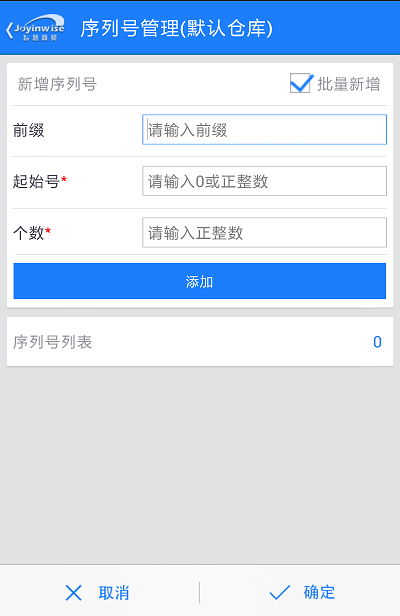
l 手动新增一个序列号及其备注，点击添加按钮，则序列号添加到下方的序列号列表。
l 勾选右上角的“批量新增”复选框，页面跳转到批量新增页。
l 输入前缀，起始号和个数，点击添加，则批量加入了多个序列号，序列号的名称是：前缀+ （以起始号开始依次递增的号），如：前缀是test，起始号是001，数量是5，则依次添加到序列号列表的序列号是：test001、test002、test003、test004、test005；
l 序列号备注：在每个序列号后面可以添加备注信息；
l 删除：长按一条序列号弹出删除序列号的二次确认框“确定要删除选中的序列号吗？”，点击确定按钮，序列号删除；点击取消按钮，放弃本次删除操作；
（二）开账状态
开账后，编辑商品序列号操作。
对于序列号必填商品，如果商品数量等于序列号个数，则不允许新增序列号；如果商品数量大于序列号个数则允许新增序列号，使其商品数量等于序列号个数；
对于序列号选填商品，如果商品数量等于序列号个数，则不允许新增序列号；如果商品数量大于序列号个数则允许新增序列号，使其商品数量大于等于序列号个数；
新增进货
（一）新增进货
1. 选择商品，如果该商品序列号启用了必填，则必须要新增该商品的序列号，且数量字段不允许编辑，由序列号的个数直接得出；如果该商品序列号启用了选填，则商品数量允许编辑，且允许维护商品序列号，但序列号的个数必须小于等于商品数量。
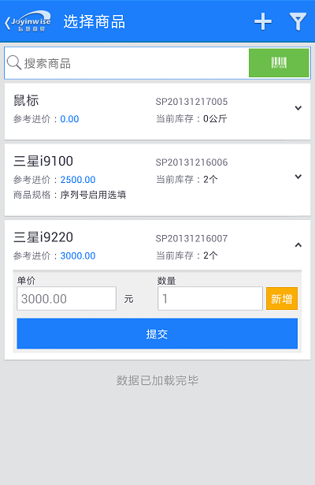 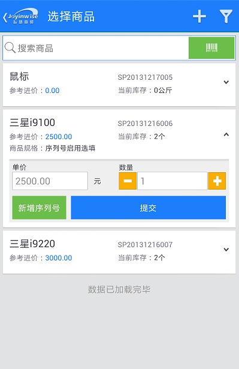
2. 点击提交后，商品及其序列号展示在进货单的明细中，允许编辑。
3. 点击保存后，进货单新增成功，进货的序列号可在网页端的序列号查询中跟踪。状态为：在库，并且显示入库时间；
（二）复制新增进货单
1.进货历史页面一览表中，选择需要复制的进货单，点击右上角的复制新增图标，打开复制新增进货单页面；
2. 复制新增页面，可以重新选择商品，也可以在原有商品上对数量和序列号进行维护，维护序列号操作请参照上述序列号管理操作；
3. 复制新增进货单保存之后，效果同新增进货单一样，可以在网页版的序列号查询页面可以查询到相应的序列号信息。
（三）进货历史
进货历史页面，查看进货单详情，可以查看添加的序列号明细。
（四）作废进货单
1. 在进货历史页面，选择进货单，长按，弹出二次确认提示“确定要作废这条单据吗？”，点击确定，作废该进货单，点击取消，放弃本次作废操作。
2. 作废后的单据，其中所包含的序列号删除，且在网页版的序列号查询页面中将无法查询到。
新增进货退货
（一）新增进货退货
1. 点击进入慧管货 – 新增进货退货，选择关联的进货单，打开进货退货单页面；
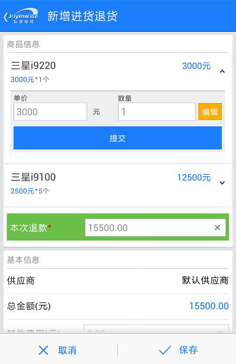 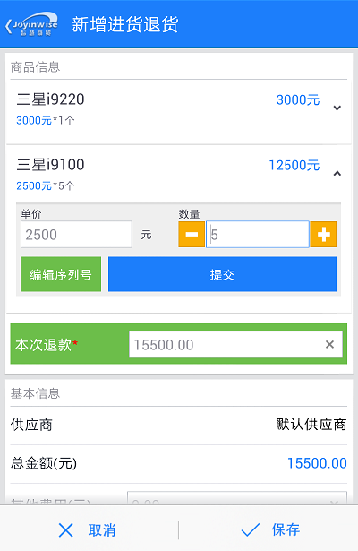
2. 执行退货
l 序列号必填：启用了序列号必填的商品，如果不是全部退货，点击数量右侧的“编辑”按钮，界面会弹出编辑序列号页面，在要退货的序列号前面点击勾选即可。数量字段不允许编辑。
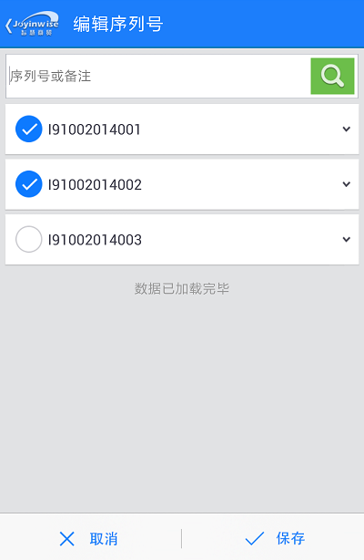
l 序列号选填：启用了序列号选填的商品，如果不是全部退货，点击单价下侧的“编辑序列号”按钮，界面会弹出编辑序列号页面，在要退货的序列号前面点击勾选即可。数量字段允许编辑，且不能小于序列号个数。
3. 点击保存按钮，进货退货操作成功；退货时选择的序列号是已出库状态；可在网页版的序列号查询中跟踪查询。
（二）进货退货历史
进货退货历史页面，查看进货退货单明细，可以查看退货的序列号明细；
（三）作废进货退货单
1. 在进货退货退货历史页面，选择进货单，长按，弹出二次确认提示“确定要作废这条单据吗？”，点击确定，作废该进货退货单，点击取消，放弃本次作废操作。
2. 作废后的单据，其中所包含的序列号还原，且在网页版的序列号查询页面中序列号状态还原。
新增销售
（一）新增销售
1. 选择商品，如果该商品序列号启用了必填，则必须要选择该商品的序列号，且数量字段不允许编辑，由勾选序列号的个数直接得出；如果该商品序列号启用了选填，则商品数量允许编辑，且允许维护商品序列号，但序列号的个数必须小于等于商品数量。
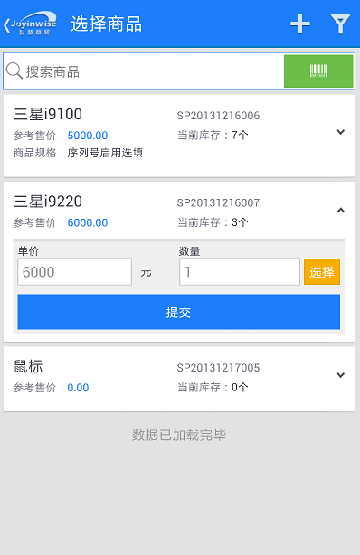 
2. 点击提交后，商品及其序列号展示在销售单的明细中，允许编辑。
3. 点击保存后，销售单新增成功，销售的序列号可在网页端的序列号查询中跟踪。状态为：已出库，并且显示出库时间；
（二）复制新增销售单
1. 销售历史页面一览表中，选择需要复制的销售单，点击右上角复制新增图标，打开复制新增销售单页面；
2. 复制新增页面，可以重新选择商品，也可以在原有商品上对数量和序列号进行修改；
3. 保存单据之前请仔细检查需要修改的相关数值，然后再保存；
4. 复制新增销售单保存之后，效果与新增销售单一致。
（三）销售历史：
销售历史页面，查看销售单明细，可以查看添加的序列号明细。
（四）作废销售单
1. 在销售历史页面，选择销售单，长按，弹出二次确认提示“确定要作废这条单据吗？”，点击确定，作废该销售单，点击取消，放弃本次作废操作。
2. 作废后的单据，其中所包含的序列号删除，且在网页版的序列号查询页面中将无法查询到。
新增销售退货
（一）新增销售退货
1. 点击进入慧管货 – 新增销售退货页面，选择关联的销售单，打开销售退货单页面；
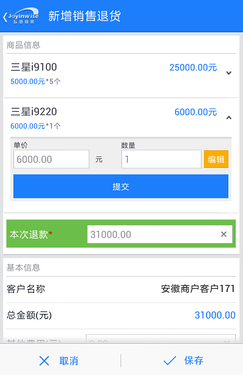 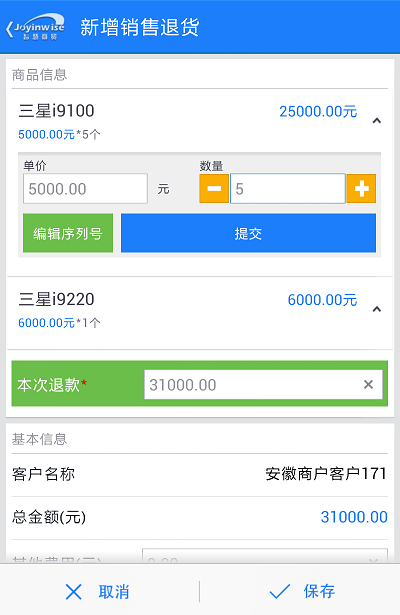
2. 执行退货
l 序列号必填：启用了序列号必填的商品，如果不是全部退货，点击数量右侧的“编辑”按钮，界面会弹出编辑序列号页面，在要退货的序列号前面点击勾选即可。数量字段不允许编辑。
l 序列号选填：启用了序列号选填的商品，如果不是全部退货，点击单价下侧的“编辑序列号”按钮，界面会弹出编辑序列号页面，在要退货的序列号前面点击勾选即可。数量字段允许编辑，且不能小于序列号个数。
3. 点击保存按钮，销售退货操作成功；可在网页版的序列号查询中跟踪查询。
（二）销售退货历史
销售退货历史页面，查看销售退货单明细，查看序列号明细。
（三）作废销售退货单
1. 在销售退货退货历史页面，选择进货单，长按，弹出二次确认提示“确定要作废这条单据吗？”，点击确定，作废该销售退货单，点击取消，放弃本次作废操作。
2. 作废后的单据，其中所包含的序列号还原，且在网页版的序列号查询页面中序列号状态还原。
库存盘点
（一）新增盘点单
1. 新增盘点，选择商品，如果该商品序列号启用了必填，则必须要编辑该商品的序列号，且数量字段不允许编辑，由序列号的个数直接得出；如果该商品序列号启用了选填，则商品数量允许编辑，且允许维护商品序列号，但序列号的个数必须小于等于商品数量。
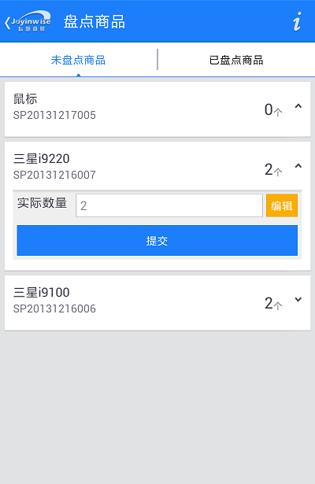 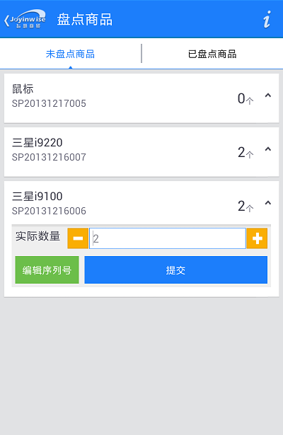
2. 序列号管理页面可以对商品的序列号新增和删除，实现对商品序列号的盘点。
3. 确定盘点数据后，点击调整库存按钮，盘点单变成已调库状态。盘点盈亏产生对序列号的影响在网页版的序列号查询中可以跟踪。
（二）查看单据
点击盘点单，查看详情，可以查看该盘点单盘点的序列号信息。
（三）单据作废
1. 在盘点历史页面，选择盘点单，长按，弹出二次确认提示“确定要作废这条单据吗？”，点击确定，作废该盘点单，点击取消，放弃本次作废操作。
2. 作废后的单据，其中所包含的序列号状态还原，且在网页版的序列号查询页面中将无法查询到。
调拨单
（一）新增调拨单
1. 进入慧管货 – 新增调拨单页面，选择商品；
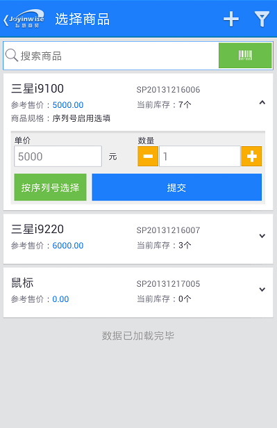
2. 如果该商品序列号启用了必填，则必须要选择该商品的序列号，且数量字段不允许编辑，由勾选序列号的个数直接得出；如果该商品序列号启用了选填，则商品数量允许编辑，且允许维护商品序列号，但序列号的个数必须小于等于商品数量。
3. 点击提交后，进入调拨单明细页面，允许修改。
4. 保存调拨单后，完成商品调拨仓库操作，商品库存和序列号发生如下变化：
库存：调拨清单中的商品，出库仓库库存减少，入库仓库库存增加；
序列号：调拨单中的序列号，在序列号查询页面不发生变化，状态仍然为：在库；
（二）查看单据
1. 点击进入 慧管货 – 历史调拨单页面，选择需要查看的单据，进入单据详细页面。
2. 包含序列号选填或者必填的商品，可以查看该商品序列号。
（三）复制新增调拨单
1. 在历史调拨单页面中，选择需要复制新增的单据，点击右上角复制新增按钮，打开复制新增调拨单页面，如果复制的单据包含序列号必填商品，则需要重新选择需要调拨的商品序列号，如果为序列号选填商品，则可以在选择序列号之后另外再编辑商品数量（商品数量的编辑不受序列号选择的先后顺序影响）；
2. 修改完相关数据之后，保存，保存后的库存及序列号变化情况可参见新增调拨单章节；
（四）作废单据
1. 在调拨历史页面，选择调拨单，长按，弹出二次确认提示“确定要作废这条单据吗？”，点击确定，作废该调拨单，点击取消，放弃本次作废操作。
2. 作废后的单据，其中所包含的序列号状态还原，且在网页版的序列号查询页面中可以查询到。
借入历史
（一）新增借入单
1. 选择商品，如果该商品序列号启用了必填，则必须要新增该商品的序列号，且数量字段不允许编辑，由序列号的个数直接得出；如果该商品序列号启用了选填，则商品数量允许编辑，且允许维护商品序列号，但序列号的个数必须小于等于商品数量；序列号的维护参考期初商品序列号新增手册，允许新增和批量新增。
2. 点击提交后，商品及其序列号展示在借入单的明细中，允许编辑。
3. 点击保存后，借入单新增成功，进货的序列号可在网页端的序列号查询中跟踪。状态为：在库，并且显示入库时间；
（二）借入转归还
1.点击进入借入单详情页面，选择需要归还的单据，点击归还按钮，或者点击明细行下侧的归还页面，打开如下图所示的商品归还单页面；
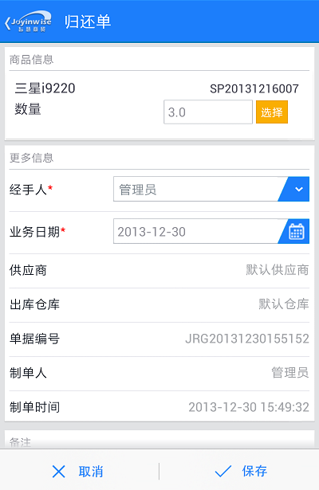
2. 如果该商品序列号启用了必填，则必须要选择该商品的序列号，且数量字段不允许编辑，由勾选序列号的个数直接得出；如果该商品序列号启用了选填，则商品数量允许编辑，且允许维护商品序列号，但序列号的个数必须小于等于商品数量。
3. 选择序列号后，点击保存按钮，归还单生成成功。相应的序列号为已出库状态。
4. 归还单详情页面，可以查看归还商品及其序列号。
5. 归还单作废后，相关的归还序列号还原为未出库状态。
（三）借入转进货
1. 点击进入借入单详情页面，选择需要借入转进货的单据或者点击行明细中的下侧的按钮，进入转进货页面。
2. 维护数量，点击保存，则借入单自动保存到进货历史中，借入单一览表中该条记录的状态变为已归还；库存和序列号信息保持不变（新增借入单时，库存和序列号已经更新过了）；
3. 借入转进货作废，相关的进货单作废。
（四）作废单据
1. 在借入历史页面，选择借入单，长按，弹出二次确认提示“确定要作废这条单据吗？”，点击确定，作废该借入单，点击取消，放弃本次作废操作。
2. 作废后的单据，其中所包含的序列号删除，且在网页版的序列号查询页面中将无法查询到。
借出历史
（一）新增借出单
1. 选择商品，如果该商品序列号启用了必填，则必须要选择该商品的序列号，且数量字段不允许编辑，由勾选序列号的个数直接得出；如果该商品序列号启用了选填，则商品数量允许编辑，且允许维护商品序列号，但序列号的个数必须小于等于商品数量。

2. 点击提交后，商品及其序列号展示在借出单的明细中，允许编辑。
3. 点击保存后，借出单新增成功，借出的序列号可在网页端的序列号查询中跟踪。状态为：已出库，并且显示出库时间；
（二）借出转归还
1.点击进入借出单详情页面，选择需要归还的单据，点击归还按钮，或者点击明细行下侧的归还页面，打开如下图所示的商品归还单页面；
2. 如果该商品序列号启用了必填，则必须要选择该商品的序列号，且数量字段不允许编辑，由勾选序列号的个数直接得出；如果该商品序列号启用了选填，则商品数量允许编辑，且允许维护商品序列号，但序列号的个数必须小于等于商品数量。
3. 选择序列号后，点击保存按钮，归还单生成成功。相应的序列号为在库状态。
4. 归还单详情页面，可以查看归还商品及其序列号。
5. 归还单作废后，相关的归还序列号还原为已出库状态。
（三）借出转销售
1. 点击进入借出单详情页面，选择需要借出转销售的单据或者点击行明细中的下侧的按钮，进入转销售页面。
2. 维护数量，点击保存，则借出单自动保存到销售历史中，借出单一览表中该条记录的状态变为已归还；库存和序列号信息保持不变。
3. 借出转销售作废，相关的销售单作废。
（四）作废单据
1. 在借出历史页面，选择借出单，长按，弹出二次确认提示“确定要作废这条单据吗？”，点击确定，作废该借出单，点击取消，放弃本次作废操作。
2. 作废后的单据，其中所包含的序列号状态还原，且在网页版的序列号查询页面中将可以查询到。